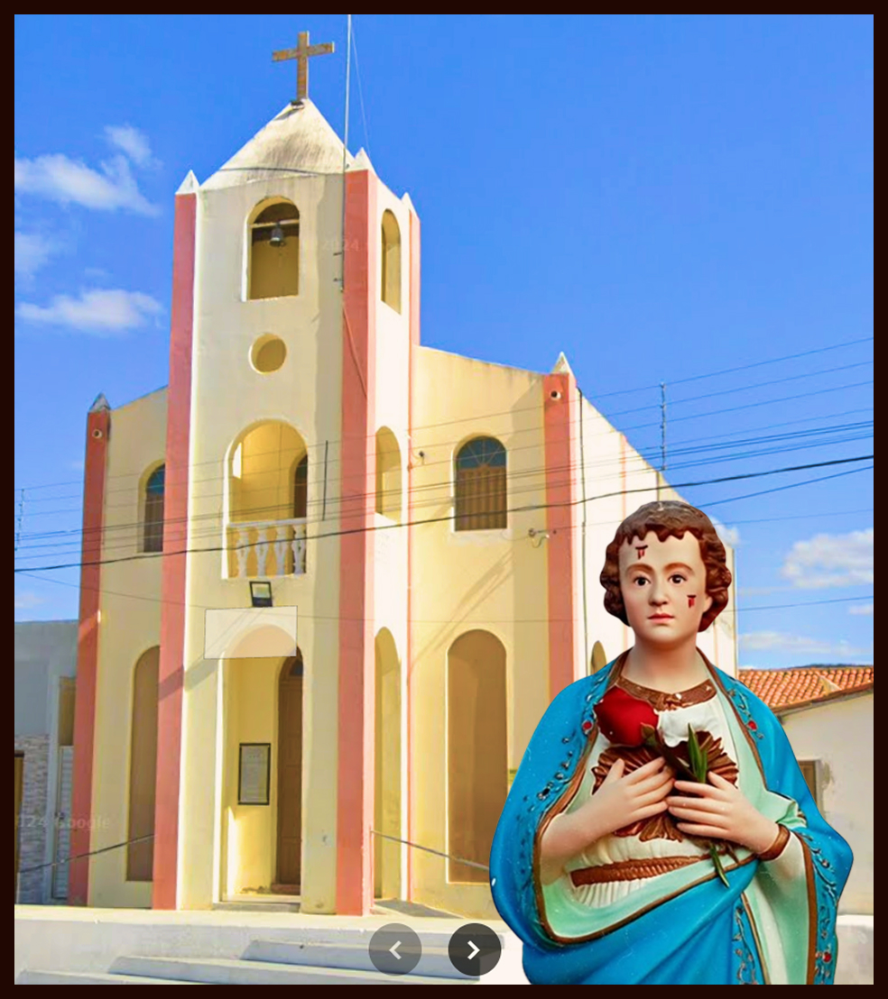
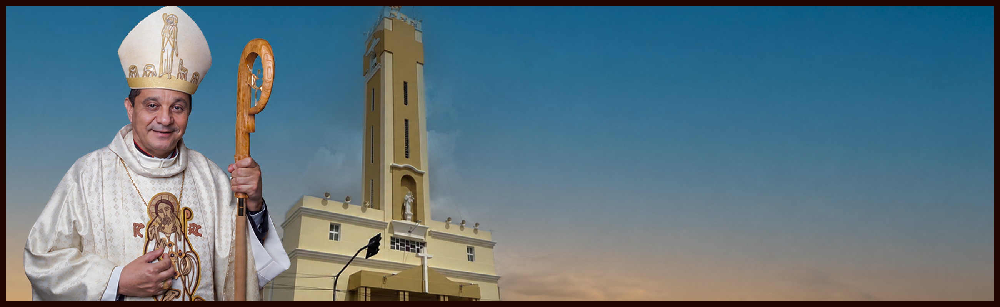

História da nossa paroquia

A história da Paróquia de Santo Onofre, em Junco do Seridó, na Paraíba, está profundamente entrelaçada com a formação do próprio município. Tudo teve início na Fazenda "Unha de Gato", propriedade do fazendeiro Balduino Guedes, cuja implantação por volta de 1892 marcou o surgimento do povoado. O local, inicialmente conhecido como "Chorão", derivou seu nome da fonte de água doce chamada "Mela Bico", onde a ... Continuar lendo...
História de Santo Onofre

Santo Onofre, também conhecido como Santo Onuphrius, é um santo cristão venerado principalmente na tradição católica e ortodoxa. Ele é frequentemente representado como um eremita ou asceta que viveu no deserto. A história de Santo Onofre é cercada por lendas e tradições, e sua vida é marcada por sua dedicação à oração, à penitência e à vida solitária. De acordo com a tradição, ele teria vivido no século IV ou V e é ... Continuar lendo...
Nossas Capelas
Santo Antônio

São Tarcísio

Nosso Pároco
PE. Fabio de Abreu
Fábio de Abreu Lima nasceu em 07 de fevereiro de 1975, em Patos, Paraíba. Filósofo e teólogo, foi ordenado presbítero em 1999, sendo incardinado na Diocese de Patos, onde atua em diversas funções e paróquias. Possui estudos em Patrologia pela Universidade Lateranense (Institutum Patristicum Augustinianum) e em Letras Clássicas pelo Instituto Vivarum Novum.
@padrefabiodeabreulimaNossa Diocese
